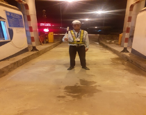
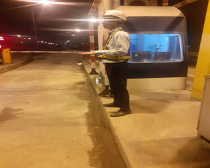
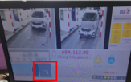
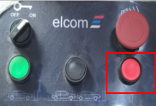

| Động tác | Ý nghĩa |
|---|---|
|
 |
- Các phương tiện dừng lại Mô tả: NVKTVH |
|
 |
Các phương tiện đi chậm lại |
| Chuyển làn phương tiện |
| STT | Tình huống | Hướng dẫn xử lý |
|---|---|---|
| 1 | Lỗi dư xe ảo |
- Quan sát hàng đợi trên màn hình thu phí, xử dụng tổ hợp phím “Ctrl+R’’
để xóa xe ảo. - Lưu ý chỉ áp dụng khi xác định chính xác, nếu không có thể gây hiện tượng xóa nhầm phải xe đang đỗ tại cabine, nếu đồng thời có xe ETC hợp lệ vào làn thì hệ thống sẽ tự động mở barrie nên có thể gây thất thoát. |
| 2 | Xe qua làn barrie không tự đóng |
- Lỗi do dư xe ảo → ấn “Ctrl+R’’ để xóa xe ảo. - Do barrier bị đơ → Thao tác phím “0 + Enter” hoặc phím “Đóng barie” trên bàn điều khiển thủ công để đóng cưỡng bức barrier (để thao tác trên bàn điều khiển thủ công trước tiên cần vặn khóa trên bàn điều khiển sang chế độ thủ công, khi thao tác đóng barie xong cần chuyển sang chế độ tự động. Chú ý quan sát hiển thị trạng thái Barrier trên màn hình và trạng thái thực tế).   |
| 3 | Xe đủ điều kiện nhưng không qua được trạm |
- Kiểm tra lỗi dư xe ảo → ấn “Ctrl+R’’ để xóa xe ảo. - Kiểm tra việc mất sick, reader → Kiểm tra đường nguồn và đường tín hiệu cấp cho sick, reader, khởi động lại sick, reader, phần mềm thu phí. - Kiểm tra etag có bị gắn sai hay trên xe có 2 etag - Kiểm tra thẻ bằng đầu đọc cầm tay. - Kiểm tra thẻ trong log sick, reader. - Thông báo cho bộ phận NOC nhờ hỗ trợ. |
| 4 | 2 xe ô tô chạy sát nhau (1 MTC, 1 ETC), xe MTC chạy trước, ETC chạy sau. 1 giao dịch → 2 xe đi qua trạm. |
- Điều phối xe MTC đi đúng làn khi qua trạm. - Yêu cầu các xe giữa khoảng cách 2 mét trở lên. - Yêu cầu xe phải dừng tại cabin nếu có xe phía trước, chờ xe phía trước đi qua barrier mới được phép đi tiếp. |
| 5 | 2 xe ô tô ETC chạy sát nhau, hệ thống không đếm tách được xe dẫn tới việc đóng barie, gây sự cố. |
- Kiểm tra lại trạng thái hoạt động của sick. - Yêu cầu các xe giữ khoảng cách 2 mét trở lên. - Yêu cầu xe phải dừng tại cabin nếu có xe phía trước, chờ xe phía trước đi qua barrier mới được phép đi tiếp. |
| 6 | Không có xe qua nhưng Barrie vẫn mở (chú ý gộp trường hợp này với chéo làn) |
- Do xe đi vào là xe chở xăng dầu, dài… nên gây nhiễu cảm biến tại
barrier. Khi barrier đóng xuống có tín hiệu nhiễu ở cảm biến nên mở lại
để đảm bảo an toàn cho người/xe. - Do dư xe trên hàng đợi → ấn “Ctrl+R’’ để xóa xe dư. - Ghi sổ nhật ký vận hành. - Thao tác phím “0 + Enter” hoặc phím đóng trên bàn điều khiển thủ công để đóng cưỡng bức barrier. |
| 7 | Hệ thống ghi ghi nhận giao dịch đã thành công nhưng barrie không mở |
- Xem có dư xe trên hàng chờ thì thao tác xóa xe dư. - Dùng phím cứng mở cho barrier cho xe qua. - Nếu dùng phím cứng mà barrier vẫn k mở thì bẻ cần barrier cho xe qua. - Đóng làn kiểm tra PLC, relay, barrier. - Thông báo cho bộ phận NOC nhờ hỗ trợ. |
| 8 | Ghi nhận giao dịch barie mở, xe chưa kịp qua thì barie đóng xuống đột ngột |
- Xe liền trước kéo nháy loop nhận diện xe tại barrie, hệ thống hiểu là
có 02 xe đã qua barrie. - Thao tác phím “0 + Enter” hoặc phím đóng trên bàn điều khiển thủ công để đóng cưỡng bức barrier. |
| 9 | Lỗi xe sau mở xe trước |
- Vận hành điều phối xe đứng đúng vị trí tại vòng từ cabin nếu barrier
không mở. - Xe đến vòng từ barrier vận hành dừng xe không được cho xe lùi lại vì khi đó hệ thống sẽ hiểu là xe đã đi qua và xóa queue, xe sau hợp lệ đi vào làn barrier sẽ mở. |
| STT | Tình huống | Cách xử lý | Thực tế triển khai hiện trường |
|---|---|---|---|
| 1 | Trường hợp xe chưa dán thẻ đã đi vào làn, xe đông không cho xe lùi lại được |
- Tại đầu vào: Nhân viên vận hành yêu cầu khách hàng cung cấp giấy tờ để
dán thẻ và hướng dẫn KH ra điểm dán thẻ để dán thẻ. KH dán thẻ nạp tiền
xong thì trả lại giấy tờ xe cho KH đồng thời báo lên nhóm vận hành BKS
thông tin đầu vào để đầu ra tạo OTC. (Trường hợp KH không đồng ý thông báo C08 xử phạt, hàng tuần tổng hợp gửi công văn đính kèm biên bản cho C08 xử phạt) - Tại đầu ra: Nhân viên vận hành lập BB xe chưa dán thẻ đi vào cao tốc giữ lại đăng ký hoặc đăng kiểm của khách hàng tại cabin, hướng dẫn KH ra điểm dán thẻ để dán thẻ nạp tiền trừ OTC. Sau khi khách hàng dán thẻ xong thì trả lại đăng ký hoặc đăng kiểm đã giữ của KH tại cabin.( Nhân viên chỉ giữ giấy tờ của KH để đảm bảo KH có dán thẻ, ko thực hiện việc giữ tiền đặt cọc của KH) |
|
| 2 | Trường hợp KH chuyển tiền vào TKGT bị lỗi |
- Đơn vị vận hành chuẩn bị phiếu thu tiền mặt. - NVVH nhận đúng số tiền bằng mệnh giá khách hàng phải trả cho lộ trình tương ứng, đồng thời trả cho khách hàng phiếu thu thể hiện đúng nội dung BKS số tiền thu của KH và trả cho KH. - Ghi nhận lại thông tin thu tiền mặt vào sổ nhật ký vận hành, cuối ca nộp tiền về cho NV Đối soát - NV đối soát lập biên bản thu tiền mặt theo mẫu “ BM.09-BCCT xe qua tram thu tiền mặt” trong quá trình đối soát và chuyển tiền ( Đính kèm) đồng thời gửi danh sách thu tiền mặt cho đầu mối phụ trách kinh doanh thu/nộp tiền của tầng tuyến. Đầu mối phụ trách kinh doanh thu/nộp tiền của từng tuyến sẽ thực hiện nộp tiền vào TKGT theo danh sách nhân viên đối soát cung cấp và đến trạm thu lại tiền mặt từ NV đối soát. Sau khi tiền vào TKGT nhân viên đối soát thực hiện tạo ngay GD OTC ghi nhận doanh thu cho CĐT |
Không thực tế tại hiện trương. Sử dụng phướng án Hỗ trợ hướng dẫn khách hàng nạp tiền vào TKGT để tạo OTC |
| 3 | Thẻ của KH bị khóa khi qua trạm |
- Trạm vào: Yêu cầu KH mở khóa mới cho vào Cao tốc - Trạm ra: * Nếu KH chủ động mở lại thẻ -˃ thực hiện trừ OTC * Nếu KH không chủ động mở thẻ thì thực hiện lập BB và thu tiền mặt đúng số tiền bằng mệnh giá khách hàng phải trả cho lộ trình tương ứng, đồng thời trả cho khách hàng phiếu thu thể hiện đúng nội dung BKS số tiền thu của KH và trả cho KH. - Ghi nhận lại thông tin thu tiền mặt vào sổ nhật ký vận hành, cuối ca nộp tiền về cho NV Đối soát - NV đối soát lập biên bản thu tiền mặt theo mẫu “ BM.09-BCCT xe qua tram thu tiền mặt” trong quá trình đối soát và chuyển tiền ( Đính kèm) đồng thời gửi danh sách thu tiền mặt cho đầu mối phụ trách kinh doanh thu/nộp tiền của tầng tuyến. Đầu mối phụ trách kinh doanh thu/nộp tiền của từng tuyến sẽ thực hiện nộp tiền vào TKGT theo danh sách nhân viên đối soát cung cấp và đến trạm thu lại tiền mặt từ NV đối soát. Sau khi tiền vào TKGT nhân viên đối soát thực hiện tạo ngay GD OTC ghi nhận doanh thu cho CĐT - Đối với thẻ Epass sau khi NVKD nạp tiền sẽ báo với Ms Tamnt để mở khóa thẻ Epass sau khi mở khóa thực hiện trừ OTC ghi nhận doanh thu cho CDT |
|
| 4 | Xe hư hỏng nặng (không có TKGT) được kéo theo bởi 01 xe kéo chở xe(không phải xe cứu hộ chuyên dùng | - Xe kéo chở xe sẽ bị trừ phí e lần | Không thực tế tại hiện trường |
| 5 | Xe không thể dán thẻ (vd: Xe cẩu Kato) nhưng vẫn đi vào cao tốc | Không cho xe không dán thẻ đi vào cao tốc | Không thực tế áp dụng tại hiện trường |
| 6 | Xe dùng biển tạm | Đề nghị KH lắp biển chính thức thì liên hệ với VETC để cập nhật lại BKS trên hệ thống | |
| 7 | Xe đổi biển số xe |
- Trên xe có thẻ Etag: thực hiện kiểm tra lại thông tin biển số xe cũ KH
cung cấp, tra cứu biển số xe trên 360.vetc.com.vn so sánh mã etag ghi
nhận trên 360.vetc.com.vn với mã etag dán trên xe * Nếu trùng khớp: Chụp lại đăng ký hoặc đăng kiểm mới của KH, chuyển cho đầu mối Phụ trách kinh doanh tại tuyến đổi biển kiểm soát cho KH trên hệ thống. Ghi nhật ký vận hành và thực hiện trừ OTC. * Nếu không trùng khớp -> nghi ngờ KH dùng biển giã-> TB C08 xử lý ( Không có C08 thì lập biên bản thu tiền mặt. Chụp lại mã Etag trên xe, ghi lại nhật ký hậu kiểm và thực hiện giống trường hợp 3. Từ mã thẻ etag trên 360.vetc.com.vn sẽ ra thông tin của KH để trừ OTC. - Trường hợp trên xe không có thẻ Etag: thực hiện giống trường hợp 1 |